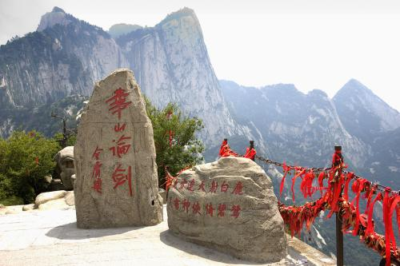
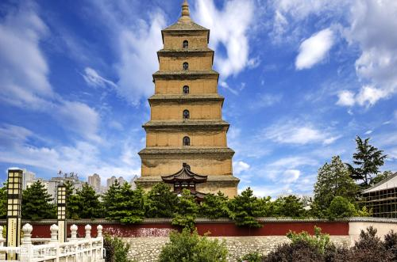
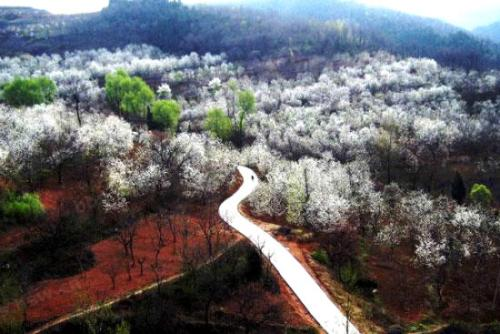
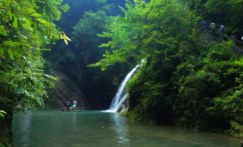

-

华山
华山，古称“西岳”，是我国著名的五岳之一，海拔2154.9米
-

秦始皇兵马俑
世界第八大奇迹。1974年，秦始皇陵兵马俑坑的发现震惊世界。
-

大雁塔
大雁塔大雁塔位于和平门外4公里的慈恩寺内
-
大唐芙蓉园
大唐芙蓉园（TangParadise）位于古都西安大雁塔之侧
-

华清池
华清池是位于唐华清宫遗址之上的一座皇家宫苑，西距西安30公里,南依骊山，北面渭水。
-

黄帝陵
黄帝陵是中华民族始祖轩辕黄帝的陵寝，位于陕西省黄陵县城北1公里处桥山之巅。
-

黄巢堡国家森林公园
黄巢堡是当年黄巢义军攻打长安时屯兵之处，这里山险、林密、水阔、谷深。
-

金丝大峡谷
国家森林公园位于陕西省东南部商南县境内，辖属商洛市。
-

太白山国家森林公园
太白山是我国著名的秦岭山脉的主峰，海拔3767米，自古便是一座名山。
-
法门寺
法门寺始建于东汉，兴起于隋，鼎盛于唐，因安置释迦牟尼佛的舍利而成为举世仰望的佛教圣地。